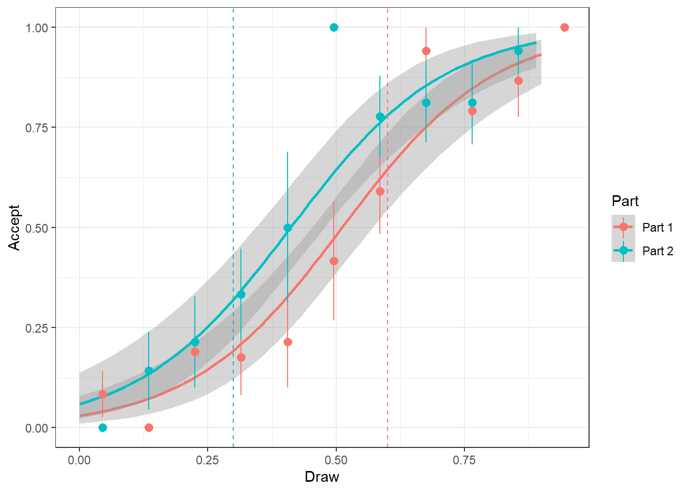
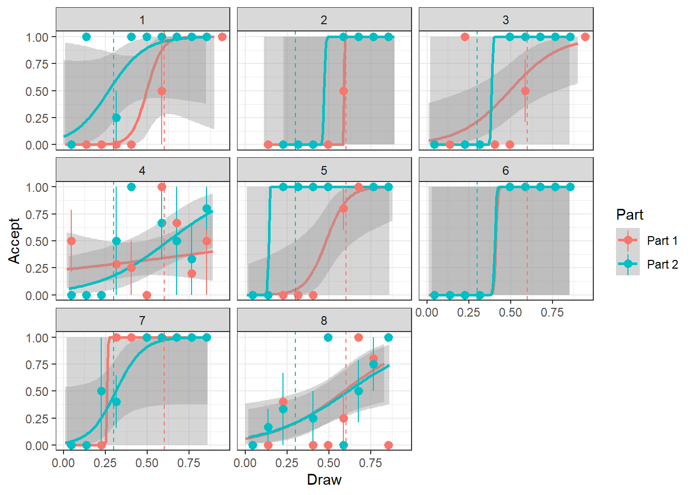
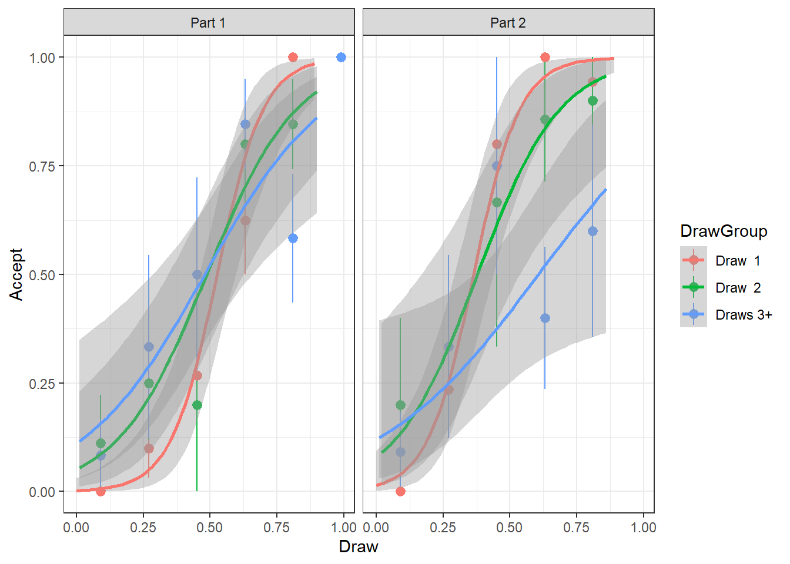
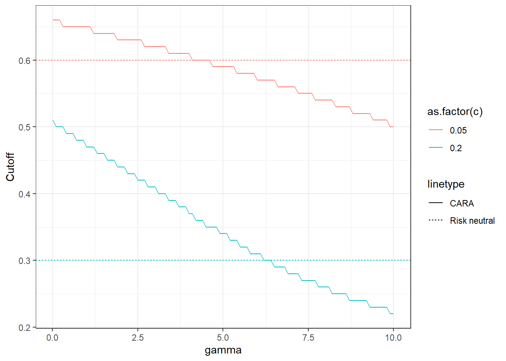

14 Search
14.1 Instructions
These are the instructions for Part 1, which was rounds 1-10. For Part 2 (11-20), the search cost changed from \(\$0.50\) to \(\$0.20\). That is the only change between parts.
Search Procedure: In this experiment, you will be able to see a series of randomly determined money amounts, but you can only keep one of these amounts.
Search Cost: Some of the money amounts will be higher than others. If the first money amount you see is acceptable, you may decide to stop there. If the first amount seems too low, you may request to see another amount. Each time you are shown a new amount, you will have to pay a search cost. When you decide to stop searching, your earnings will be the amount that you end up with, minus the cost of search, i.e. the search cost times the number of random amounts that you saw in the sequence.
Search Sequence: You can only claim one of the amounts that you see in a “search sequence.” You must pay the search cost for each amount that you see, including the first one. You may decide not to search at all (and earn 0), you may stop after seeing the first amount, or you may continue searching as many times as as you wish.
Random Draws: The money amounts will be greater than or equal to $0.00 and less than or equal to $0.90. Any penny amount in this interval is equally likely. Imagine a roulette wheel with stops marked $0.00, $0.01, $0.02, … $0.89, $0.90. Then a random draw is like spinning the roulette wheel, with each money amount being just as likely as any other, regardless of whether the previously observed amount was relatively high or low.
Search Cost: Your search cost will be $0.05 for each amount that you observe. This cost will not change during a search sequence, and any changes will be announced in advance.
Recall: Each time you see an amount, you may either accept it and stop searching, or you may reject it and search again. Once an amount is passed up, you are not permitted to go back later and claim that amount if you change your mind. Thus when you stop a search sequence, you may end up accepting an amount that was not the highest of the random amounts that you have encountered.
Earnings: You begin the experiment with an amount of money, $6.00. There will be a number of search sequences, and each one offers a chance to add to your earnings.
Gains and Losses: Earnings for a search sequence will be positive if the amount you accept is greater than the total search cost for that sequence, calculated as the number of amounts observed times the cost $0.05 per draw. Thus earnings may be positive or negative.
Total Earnings The computer program starts you with $6.00, with gains being added and losses being subtracted. After each search sequence, your earnings for that sequence and your total earnings up to that point will be displayed
To summarize, there will be a number of search sequences.
In each sequence, you will have the option to observe one or more randomly determined numbers or “draws.”
Each random draw will be an amount of money on the interval from $0.00 to $0.90.
Each penny amount in this interval is equally likely.
You will pay $0.05 to see the first draw (and any subsequent draw) in a search sequence.
You may stop the sequence at any time and accept the most recently observed amount.
There is no limit on the number of draws that you may take.
You begin with an initial balance of $6.00. Positive earnings will be added and negative earnings will be subtracted.
14.2 Questions
Suppose that you were in Round \(t\), your last draw was \(x\) (a known number), and you are deciding whether or not to incur another unit \(c\) of search cost. What is your total search cost at the end of round \(t\) in the case where (a) you do not search in period \(t\), and (b) if you search in period \(t\)?
At the beginning of Round \(t\), which parts of your cost are sunk cost, and which parts are not sunk?
Note that the value of your last draw \(x\) must be at least \(x\). This is because at the beginning of Round \(t\) you can get \(x\) for sure, so in all of the instances in which you choose to search again, the net value of searching must be larger than \(x\) (otherwise you would not have searched). Suppose that \(V(x)\) represents the value of beginning round \(t\) with draw \(x\). The net (i.e. ignoring sunk costs) value of searching and not searching in round \(t\) as a function of \(V(x)\), \(t\), and \(c\): \[ \begin{aligned} \text{if I don't search: } & x\\ \text{if I do search: } & E[V(X)]-c \end{aligned} \] where \(X\) is the random draw you get if you search. At the beginning of round \(t\), you choose to search or not search based on which of these is greatest. Therefore it must be that: \[ V(x)=\max\{x,E[V(X)]-c\} \] Note that \(E[V(X)]\) is a constant, because the expectation operator takes out all of the randomness. Letting \(E[V(X)]=v\), we can write: \[ \begin{aligned} E[V(X)]&=E\left[\max\{X,E[V(X)]-c\}\right]\\ v&=E\left[\max\{X,v-c\}\right]\\ v&=E(X\mid X>v-c)p(X>v-c)+(v-c)p(X\leq v-c) \end{aligned} \] Plot the expression on the right (vertical axis) as a function of \(v\) (horizontal axis) for the two values of \(c\) used in the experiment. Also plot a \(45^\circ\) line. Illustrate the solution to this equation graphically.
Let \(x^*\) be the optimal stopping rule. That is, I stop searching if and only if \(x\geq x^*\). Write an expression for \(x^*\). What are the model’s predictions for each part? Hint: if \(x=x^*\), then you would be indifferent between searching and not.
On the same plot, with “Draw” on the horizontal axis, show the following for each part:
- The average choice in each part, binned into increments of \(\$0.10\). That is, plot a dot at \(x=5\) and \(y=\) the average fraction of “Accept” decisions for draws between 0 and 10.
- The model’s predictions for both parts (these should be vertical lines)
- Masters students only A fitted curve through these points.
Using your plot from the previous question, describe any features of the data that the theory is predicting well, and any features that it is predicting badly.
If subjects did not ignore sunk costs, what kind of behavior do you think you would observe? Write a qualitative description about how behavior would change, and produce a plot where we may be able to see the difference between someone who ignores sunk costs, and someone who does not ignore sunk costs.
- Masters students: Do all of the above, and also do a formal hypothesis test of the following: \[ H_0:\ \text{People ignore sunk costs},\quad H_A:\ \text{People do not ignore sunk costs} \]
Bonus question (I am not expecting you to do this, but there is nothing about it that you haven’t learned already). Suppose that risk-averse subjects have the following utility function: \[ u(x)=-\exp(-\gamma x) \] Note that if a person accepts \(x\) after \(t\) draws, their final utility is: \[ u(x-ct)=-\exp(-\gamma(x-ct))=-\exp(-\gamma x)\exp(\gamma ct)=u(x)\exp(\gamma c t) \] since \(\gamma c t>0\), and the sign on this utility function is negative, \(\exp(\gamma c t)\) can be considered similar to a discount factor. Therefore the maximization problem becomes:
\[ \begin{aligned} V(x)&=\max\left(-\exp(-\gamma x),E[V(X)]\exp(\gamma c)\right) \end{aligned} \]
Solve this dynamic optimization problem (either numerically or analytically), and plot the predicted cutoff values for a reasonable range of \(\gamma\) for both parts of the experiment. You may use the fact that \(V\) is a contraction without proving it (although it is not that difficult, if you feel the urge).
Bonus question Estimate a parameter \(\gamma\) for each participant.
14.3 Solutions
- Suppose that you were in Round \(t\), your last draw was \(x\) (a known number), and you are deciding whether or not to incur another unit \(c\) of search cost. What is your total search cost at the end of round \(t\) in the case where (a) you do not search in period \(t\), and (b) if you search in period \(t\)?
Solution: \[ \text{Total search cost} = \begin{cases} (t-1)c&\text{ if I do not search in this round}\\ tc& \text{ if I search in this round} \end{cases} \]
- At the beginning of Round \(t\), which parts of your cost are sunk cost, and which parts are not sunk?
Solution: \((t-1)c\) is sunk, \(c\) is not sunk: My decision in Round \(t\) is whether or not to incur an additional \(c\) in order to search again.
- Note that the value of your last draw \(x\) must be at least \(x\). This is because at the beginning of Round \(t\) you can get \(x\) for sure, so in all of the instances in which you choose to search again, the net value of searching must be larger than \(x\) (otherwise you would not have searched). Suppose that \(V(x)\) represents the value of beginning round \(t\) with draw \(x\). The net (i.e. ignoring sunk costs) value of searching and not searching in round \(t\) as a function of \(V(x)\), \(t\), and \(c\): \[ \begin{aligned} \text{if I don't search: } & x\\ \text{if I do search: } & E[V(X)]-c \end{aligned} \] where \(X\) is the random draw you get if you search. At the beginning of round \(t\), you choose to search or not search based on which of these is greatest. Therefore it must be that: \[ V(x)=\max\{x,E[V(X)]-c\} \] Note that \(E[V(X)]\) is a constant, because the expectation operator takes out all of the randomness. Letting \(E[V(X)]=v\), we can write: \[ \begin{aligned} E[V(X)]&=E\left[\max\{X,E[V(X)]-c\}\right]\\ v&=E\left[\max\{X,v-c\}\right]\\ v&=E(X\mid X>v-c)p(X>v-c)+(v-c)p(X\leq v-c) \end{aligned} \] Plot the expression on the right (vertical axis) as a function of \(v\) (horizontal axis) for the two values of \(c\) used in the experiment. Also plot a \(45^\circ\) line. Illustrate the solution to this equation graphically.
Solution First, let’s calculate some of the components of the RHS, noting that \(X\sim U(\underline x,\overline x)\). That is, each \(X\) on the unit interval is equally likely: \[ \begin{aligned} p(X>v-c)&=1-\frac{v-c-\underline x}{\overline x-\underline x}\\ E[X\mid X>v-c]&=\frac{1}{2}(\overline x+v-c)\\ p(X\leq v-c)&=1-p(X>v-c)=\frac{v-c-\underline x}{\overline x-\underline x} \end{aligned} \] Where \(\underline x=0\) and \(\overline x=0.9\) are the minimum and maximum of the random values.
library(dplyr)
library(ggplot2)
library(kableExtra)
c<-c(0.05,0.2)
xmax<-0.9
xmin<-0
v<-seq(0,1,length=101)
PlotThis<-data.frame()
for (cc in c) {
PlotThis<-data.frame(v) %>% mutate(PrXlv=(v-cc-xmin)/(xmax-xmin), # Pr(X<=(v-c))
EXconditional=0.5*(xmax+v-cc),
EV = EXconditional*(1-PrXlv)+(v-cc)*PrXlv,
c=paste("c =",cc),cost=cc) %>% rbind(PlotThis)
}
(ggplot()
+geom_line(data=PlotThis,aes(x=v,y=EV,color=c,linetype="search cost"))
+scale_linetype_manual(values=c("dotted","solid"))
+theme_bw()
+geom_abline(aes(slope=1,intercept=0,linetype="45\u00B0 line"))
)
- Let \(x^*\) be the optimal stopping rule. That is, I stop searching if and only if \(x\geq x^*\). Write an expression for \(x^*\). What are the model’s predictions for each part? Hint: if \(x=x^*\), then you would be indifferent between searching and not.
Solution The indifference condition is: \[ \begin{aligned} x^*&=\text{expected value of searching}=v-c\\ \end{aligned} \] So the model predicts that you should stop searching if and only if:
Predictions<-PlotThis %>% mutate(d=abs(EV-v)) %>% group_by(cost) %>% summarize(v=v[which.min(d)]) %>% mutate(StoppingX=v-cost)
Predictions %>% kbl() %>% kable_styling(bootstrap_options = c("striped", "hover", "condensed"))| cost | v | StoppingX |
|---|---|---|
| 0.05 | 0.65 | 0.6 |
| 0.20 | 0.50 | 0.3 |
- On the same plot, with “Draw” on the horizontal axis, show the following for each part:
- The average choice in each part, binned into increments of \(\$0.10\). That is, plot a dot at \(x=5\) and \(y=\) the average fraction of “Accept” decisions for draws between 0 and 10.
- The model’s predictions for both parts (these should be vertical lines)
- Masters students only A fitted curve through these points.
D<-read.csv("PS05dataSearch.csv") %>% data.frame() %>% mutate(Part = paste("Part",1+(Round>10))) %>% select(Round,ID,Draw.Number,Draw,Highest.Draw,Part,Decision) %>% mutate(Accept = 1*(Decision=="a"))
D %>% head() %>% kbl() %>% kable_styling(bootstrap_options = c("striped", "hover", "condensed"))| Round | ID | Draw.Number | Draw | Highest.Draw | Part | Decision | Accept |
|---|---|---|---|---|---|---|---|
| 1 | 1 | 1 | 0.55 | 0.62 | Part 1 | s | 0 |
| 1 | 1 | 2 | 0.07 | 0.62 | Part 1 | s | 0 |
| 1 | 1 | 3 | 0.16 | 0.62 | Part 1 | s | 0 |
| 1 | 1 | 4 | 0.14 | 0.62 | Part 1 | s | 0 |
| 1 | 1 | 5 | 0.62 | 0.62 | Part 1 | a | 1 |
| 1 | 2 | 1 | 0.62 | 0.62 | Part 1 | a | 1 |
plt<-(
ggplot(data=D,aes(x=Draw,y=Accept,color=Part,group=Part))
+geom_smooth(method="glm",method.args=list(family="binomial"))
+stat_summary_bin(bins=10)
+geom_vline(aes(xintercept=Predictions$StoppingX[1],color="Part 1"),linetype="dashed")
+geom_vline(aes(xintercept=Predictions$StoppingX[2],color="Part 2"),linetype="dashed")
+theme_bw()
)
plt
And for subjects individually (I didn’t ask for this). Note that at the individual level, it looks like some people have much sharper cutoffs.
plt+facet_wrap(~ID)
- Using your plot from the previous question, describe any features of the data that the theory is predicting well, and any features that it is predicting badly.
Solution
Predicting well:
- Acceptance probabilities are uniformly higher in Part 2
- Acceptance probabilities increase with Draw
Predicting badly:
- The Acceptance probability is not close to a sharp cutoff rule
That is, the model is predicting the comparative statics well, but not the points.
- If subjects did not ignore sunk costs, what kind of behavior do you think you would observe? Write a qualitative description about how behavior would change, and produce a plot where we may be able to see the difference between someone who ignores sunk costs, and someone who does not ignore sunk costs.
- Masters students: Do all of the above, and also do a formal hypothesis test of the following: \[ H_0:\ \text{People ignore sunk costs},\quad H_A:\ \text{People do not ignore sunk costs} \]
Solution If subjects do not ignore sunk cost, then we would expect that the sunk costs of search would affect the acceptance rule. We could see this by looking at acceptance probabilities as a function of “Draw.Number”
D<-D %>% mutate(DrawGroup=ifelse(Draw.Number<=2,paste("Draw ",Draw.Number),"Draws 3+"))
(
ggplot(data=(D),aes(x=Draw,y=Accept,color=DrawGroup))
+stat_summary_bin(bins=5)
+facet_wrap(~Part)
+theme_bw()
+geom_smooth(method="glm",method.args=list(family="binomial"))
)
It does not looks like there is a systematic relationship between draw number and acceptance probability: the acceptance probability gets flatter (i.e. less responsive to Draw).
A formal test of this hypothesis could be to test whether draw number has a significant effect of acceptance probability:
library(stargazer)
library(miceadds)
# base model, H0 imposed: Acceptance rule does not change with draw number
logit1<-glm(data=D,Accept~Draw*I(Part))
se1<-sqrt(diag(glm.cluster(data=D,Accept~Draw*I(Part),D$ID,family=binomial(link="logit"))$vcov))
# Unrestricted model, H0 included, but HA allowed: Acceptance can be a function of draw number:
logit2<-glm(data=D,Accept~Draw*I(Part)*Draw.Number)
se2<-sqrt(diag(glm.cluster(data=D,Accept~Draw*I(Part)*Draw.Number,D$ID,family=binomial(link="logit"))$vcov))
stargazer(logit1,logit2,type="html",se=list(se1,se2))| Dependent variable: | ||
| Accept | ||
| (1) | (2) | |
| Draw | 1.178 | 1.319 |
| (2.109) | (2.536) | |
| I(Part)Part 2 | 0.093 | 0.093 |
| (0.885) | (2.255) | |
| Draw.Number | 0.059 | |
| (0.445) | ||
| Draw:I(Part)Part 2 | 0.006 | 0.279 |
| (1.405) | (4.091) | |
| Draw:Draw.Number | -0.066 | |
| (0.767) | ||
| I(Part)Part 2:Draw.Number | 0.003 | |
| (0.871) | ||
| Draw:I(Part)Part 2:Draw.Number | -0.141 | |
| (1.700) | ||
| Constant | -0.086 | -0.209 |
| (0.933) | (1.317) | |
| Observations | 330 | 330 |
| Log Likelihood | -148.614 | -141.256 |
| Akaike Inf. Crit. | 305.228 | 298.513 |
| Note: | p<0.1; p<0.05; p<0.01 | |
Clustered standard errors are in parentheses.
The LR test would compare the likelihoods to a critical value from the \(\chi^2(3)\) disribution (for \(\alpha=0.05\) the critical value is 7.8147279). The test statistic is \(2(-140.2563179--147.613971)=14.7153062\), so we would reject the null.
However it is unreasonable to assume that each decision is independent. Clustering at the subject level (ID):
# Estimates
b<-logit2$coefficients[6:8]
print(b)## Draw:Draw.Number I(Part)Part 2:Draw.Number
## -0.066479374 0.003247519
## Draw:I(Part)Part 2:Draw.Number
## -0.140502028vcovMatrix<-glm.cluster(data=D,Accept~Draw*I(Part)*Draw.Number,D$ID,family=binomial(link="logit"))$vcov[6:8,6:8]
knitr::kable(vcovMatrix)| Draw:Draw.Number | I(Part)Part 2:Draw.Number | Draw:I(Part)Part 2:Draw.Number | |
|---|---|---|---|
| Draw:Draw.Number | 0.5875790 | 0.6143337 | -1.179580 |
| I(Part)Part 2:Draw.Number | 0.6143337 | 0.7582084 | -1.452639 |
| Draw:I(Part)Part 2:Draw.Number | -1.1795805 | -1.4526388 | 2.889573 |
W<-t(b) %*% solve(vcovMatrix) %*% bThe Wald test statistic using the is 0.2277026, so we fail to reject the null. Note how clustered standard errors produce a much smaller test statistic. This is because they are more accurately reflecting the uncertainty in our estimates.
- (bonus question). Suppose that risk-averse subjects have the following utility function: \[ u(x)=-\exp(-\gamma x) \] Note that if a person accepts \(x\) after \(t\) draws, their final utility is: \[ u(x-ct)=-\exp(-\gamma(x-ct))=-\exp(-\gamma x)\exp(\gamma ct)=u(x)\exp(\gamma c t) \] since \(\gamma c t>0\), and the sign on this utility function is negative, \(\exp(\gamma c t)\) can be considered similar to a discount factor. Therefore the maximization problem becomes:
\[ \begin{aligned} V(x)&=\max\left(-\exp(-\gamma x),E[V(X)]\exp(\gamma c)\right) \end{aligned} \]
Solve this dynamic optimization problem (either numerically or analytically), and plot the predicted cutoff values for a reasonable range of \(\gamma\) for both parts of the experiment. You may use the fact that \(V\) is a contraction without proving it (although it is not that difficult, if you feel the urge).
Solution
Taking expectations of both sides:
\[ \begin{aligned} E[V(X)]&=E\left[\max\left(-\exp(-\gamma X),E[V(X)]\exp(\gamma c)\right)\right]\\ v(\gamma)&=E\left[\max\left(-\exp(-\gamma X),v(\gamma)\exp(\gamma c)\right)\right] \end{aligned} \]
Note that since \(v\) must be between \(u(0)\) and \(u(1)\), we can solve this (approximately) using grid search.
Since \(V\) is a contraction, we can find \(v(\gamma)\) with the following algorithm with any initial guess \(v_0\):
\[ v_{t+1}=E\left[\max\left(-\exp(-\gamma X),v_t\exp(\gamma c)\right)\right]\\ v(\gamma)=\lim_{t\to\infty} v_t \]
The expectation, treating \(X\) as continuous, is: \[ v_{t+1}=E\left[\max\left(-\exp(-\gamma X),v_t\exp(\gamma c)\right)\right] \]
Solving numerically:
X<-seq(0,0.9,length=91)
AcceptCutoff<-function(c,g) {
v<- -100
for (ii in 1:100) {
VX<- -exp(-g*X)
VX[VX<(v*exp(g*c))]<-v*exp(g*c)
#print(abs(mean(VX)-v))
v<-mean(VX)
}
min(X[VX>=v])
}
G<-seq(0.01,10,length=101)
c<-c(0.05,0.2)
DCutoff<-data.frame()
for (cc in c) {
for (gg in G) {
Cutoff<-c()
Cutoff<-c(Cutoff,AcceptCutoff(cc,gg))
tmp<-data.frame(Cutoff,G)
tmp$gamma<-gg
tmp$c=cc
DCutoff<-rbind(DCutoff,tmp)
}
}
(
ggplot(DCutoff,aes(x=gamma,y=Cutoff,color=as.factor(c),linetype="CARA"))
+geom_line()
+geom_hline(data=Predictions,aes(linetype="Risk neutral",yintercept=StoppingX,color=as.factor(cost)))
+theme_bw()
)
Note also that the person is indifferent if: \[ -\exp(-\gamma x)=v\exp(\gamma c)\\ x=\frac{-\log(-v\exp(\gamma c))}{\gamma} \]
- Estimate a parameter \(\gamma\) for each participant.
Solution I am going overboard here, but this is how I will do it.
I assume that each subject makes noisy decisions. That is, they are more likely to choose the action with the highest payoff, but they make mistakes with probability \(\theta\in(0.5,1)\). Therefore, if a person has parameter \(\gamma_i\): \[ \begin{aligned} p(\text{accept}\mid x,\theta,\gamma)&=\begin{cases} \theta&\text{ if } x>x^*\\ 1-\theta&\text{ otherwise} \end{cases} \end{aligned} \]
I assign the following priors: \[ \begin{aligned} \theta&\sim U(0.5,1)\\ \log(\gamma)&\sim N(\mu,\sigma^2)\\ \mu &\sim N(\log(5),1)\\ \log\sigma&\sim N(0.5,1) \end{aligned} \]